Install and configure Visual Paradigm
Reverse engineer our current engine codebase and generate class diagrams
Tune the model to be more expressive and coherent
Examine the creation of sequence diagrams
Clone lab11_lighting from the last lab - and call the new project lab11_modelling. Use this version here if you like:
Download Visual Paradigm Community Edition:
http://www.visual-paradigm.com/download/vpuml.jsp?edition=ce
Follow the instructions - and install the standard edition. You will need this codes here:
20L4W-4F6Z3-Y5C27-Y3C99-10MN8
Before commencing the modelling exercise, we will perform one renaming exercise, to clarify the world package somewhat.
The name "Cameras" is too close to "Camera", so we will rename the former to "CameraRig". Using Eclipse, do this in these steps:
Rename the source file 'cameras.h' to 'camerarig.h'
Rename the source file 'cameras.cpp' to 'camerarig.cpp'
Track down all reference to cameras.h and change them to camerarig.cpp (there should just be 2)
Using eclipse refactoring menu -
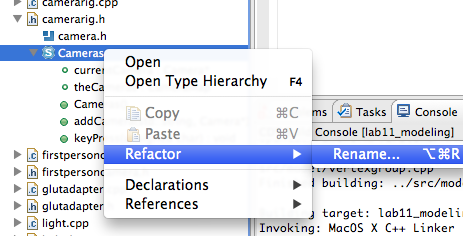
rename the class itself to CameraRig
This should change all the relevant references - rebuild to verify
Finally, in World, rename the variable cameras to cameraRig (you can also do this using the refactoring menu)
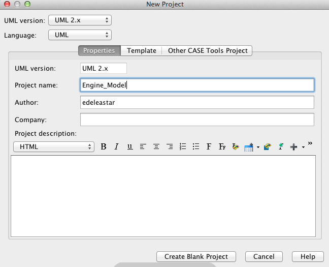
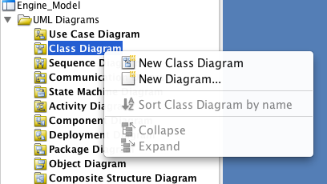
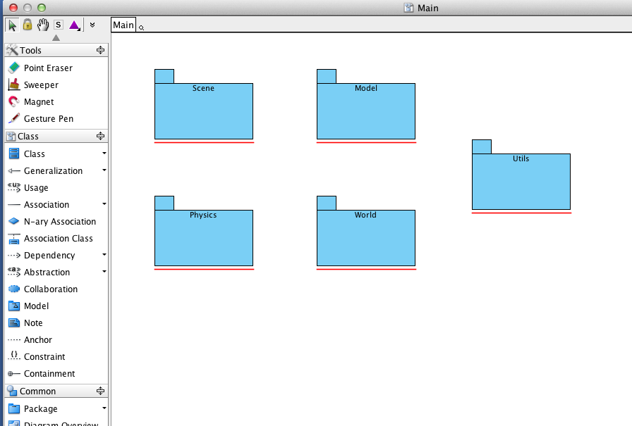
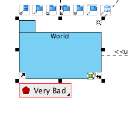
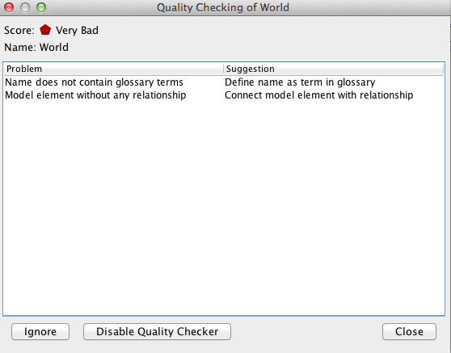
Top populate model, we could manually create all of the classes.
However, this tool as a reverse engineering feature which will automate much of the work.
Select "Tools->Code Engineering->Instant Reverse->C++ Source"
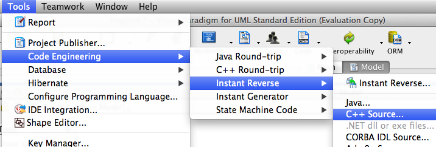
Accessing this feature will require a licence upgrade. We will accept the switch to 'Standard' edition, and use the trial license for the moment.
On the next screen, navigate to the 'model' folder of our project C++ source and press ok:
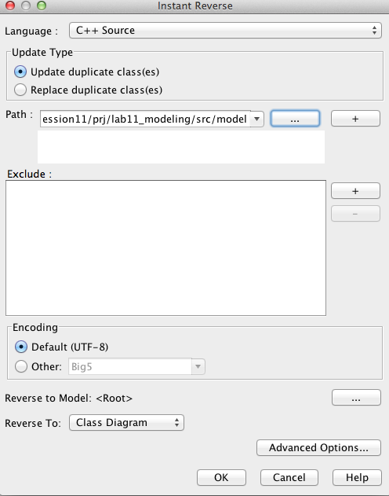
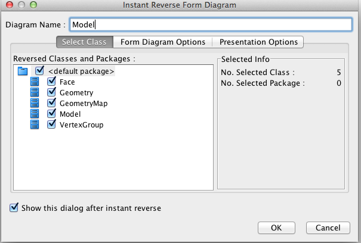
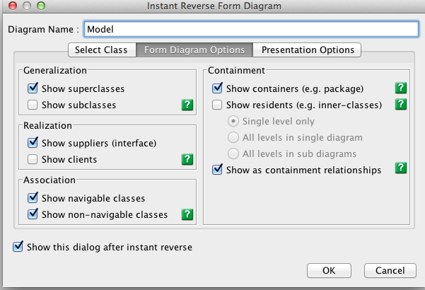
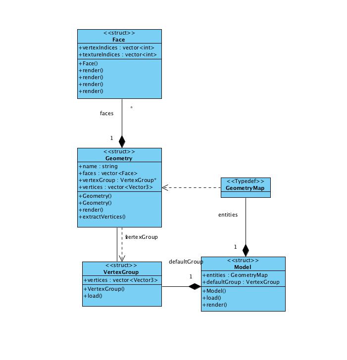
Using exactly the same procedure, reverse engineer
Scene
Physics
Utils
World.
The models you generate should look like these:
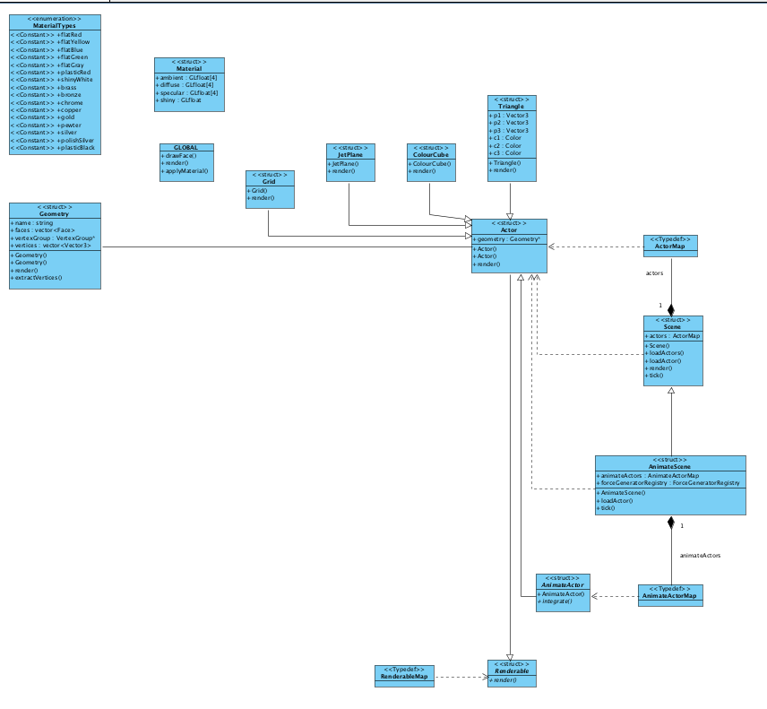
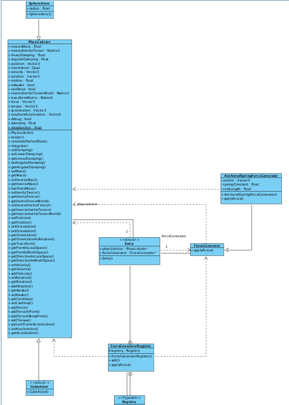
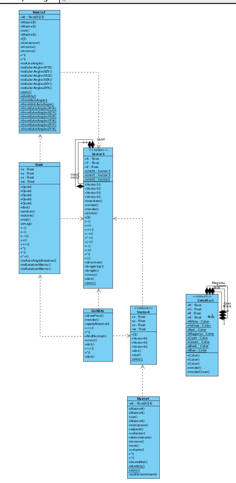
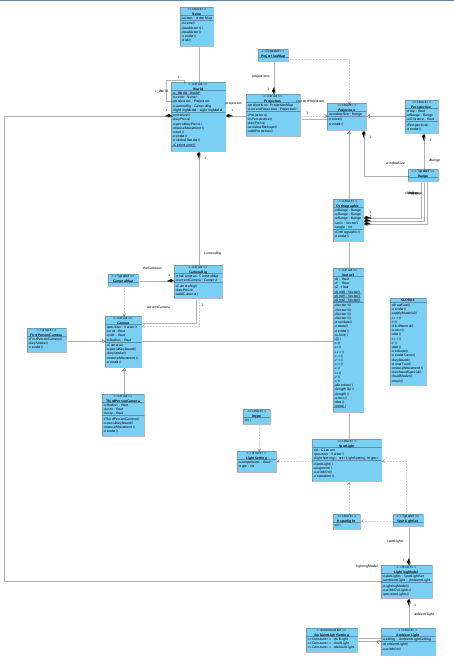
The class diagrams are to a large extent accurate - but they will need to be manuall laid out if they are to communicate a design effectively.
Here is a better representation of World:
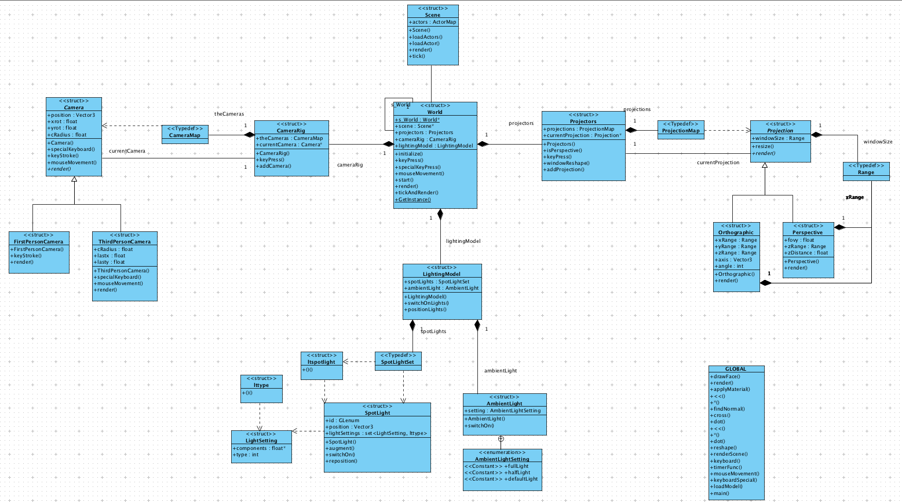
To simplify the diagram, Vector3 has been removed, and also some unneccessary dependencies between World and CameraRig and Projectors have been removed. Otherwsie, the diagram is accurate.
We can simplify the diagram by hiding all class attributes. To do this, select "Edit->Select all". Then right click and select "Presentation Options->Attributes->Hide all:
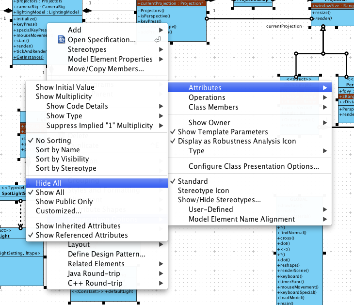
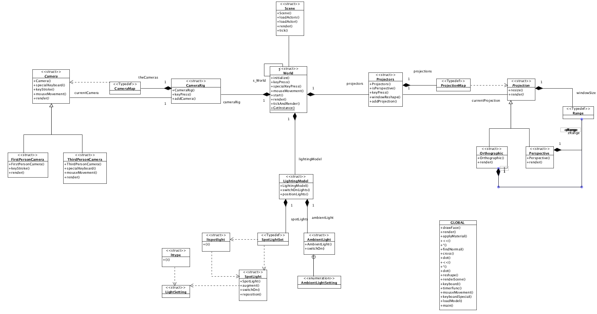
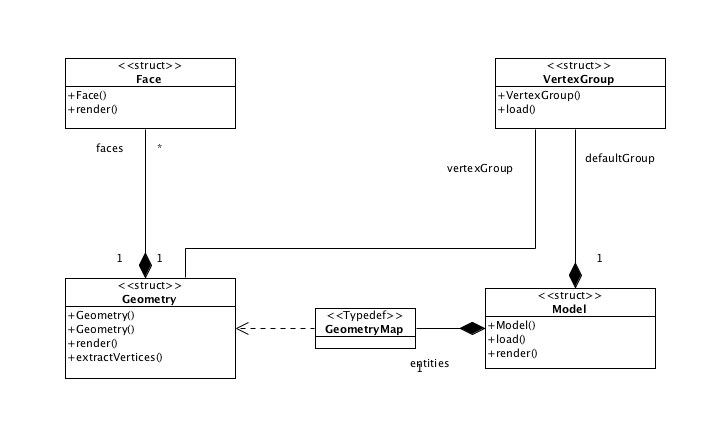
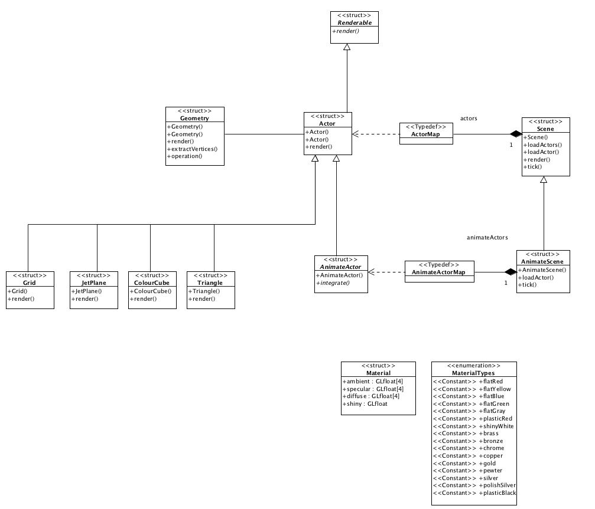
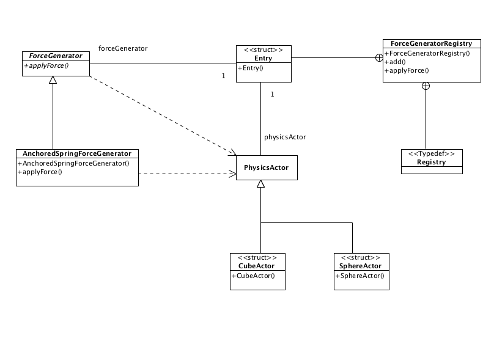
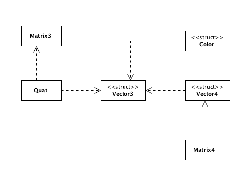
This is the complete visual paradigm model:
Experiment with the Sequence Diagram feature. Remember, you can drag and drop classes from the "Class Repository" directly onto the sequence diagram canvas (select 'lifeline' when you drop the class).
Here is a sample:
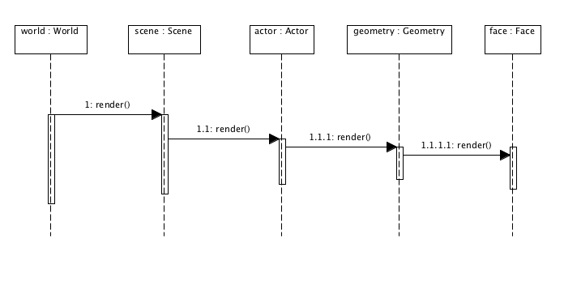
Try to compose a diagram for a model load scenario
You might find this UML reference useful:
http://www.holub.com/goodies/uml/